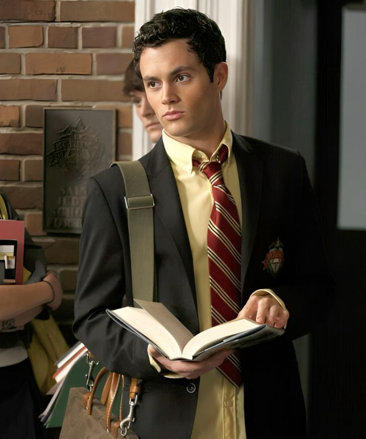
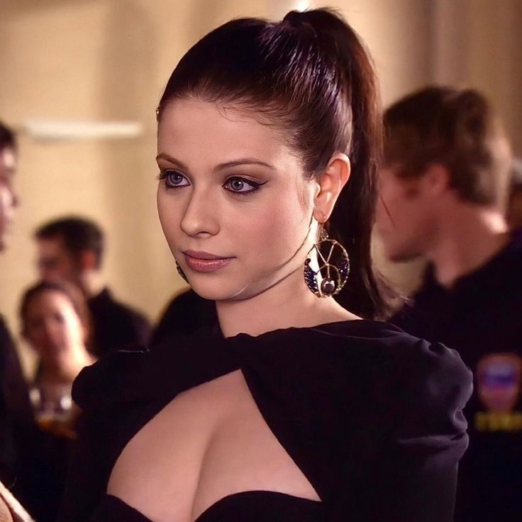
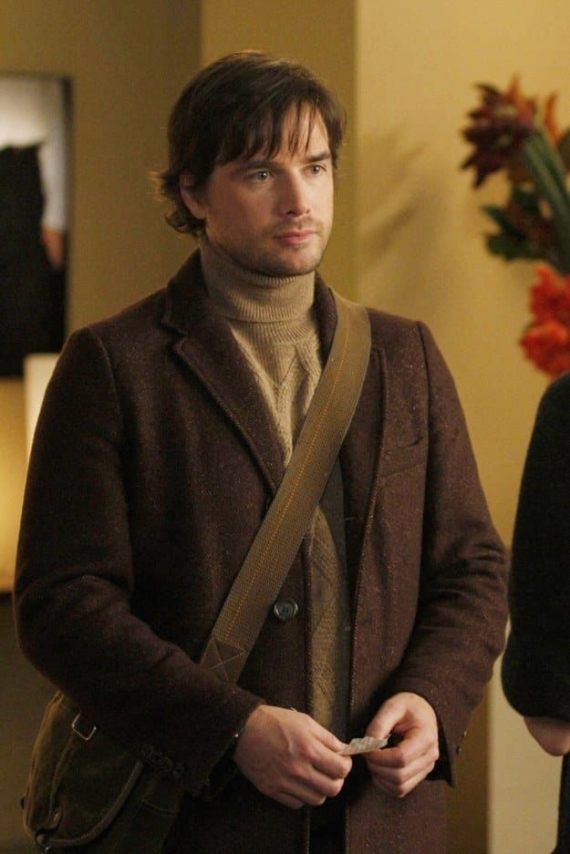
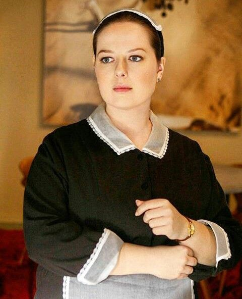
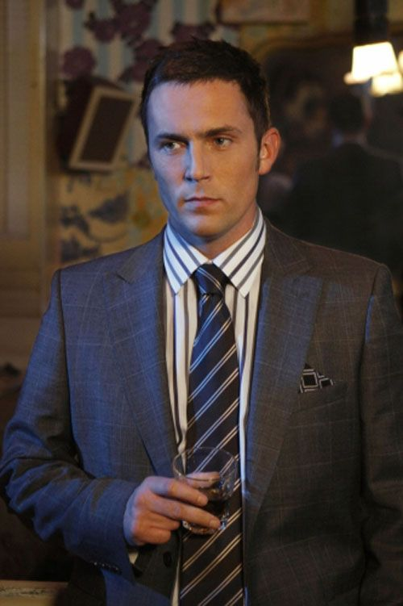
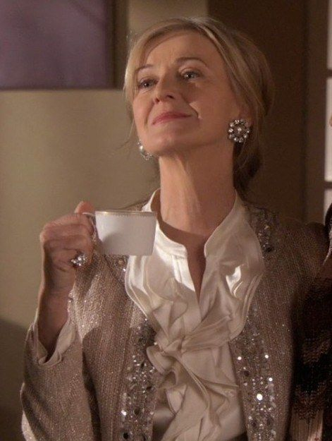
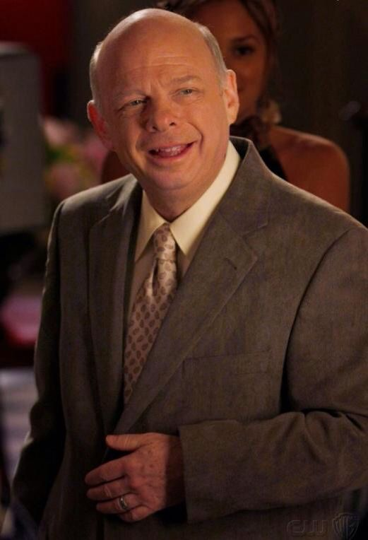
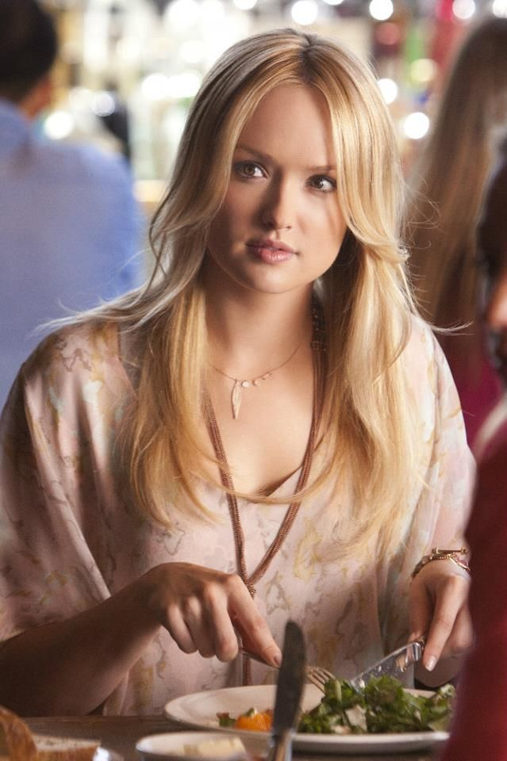
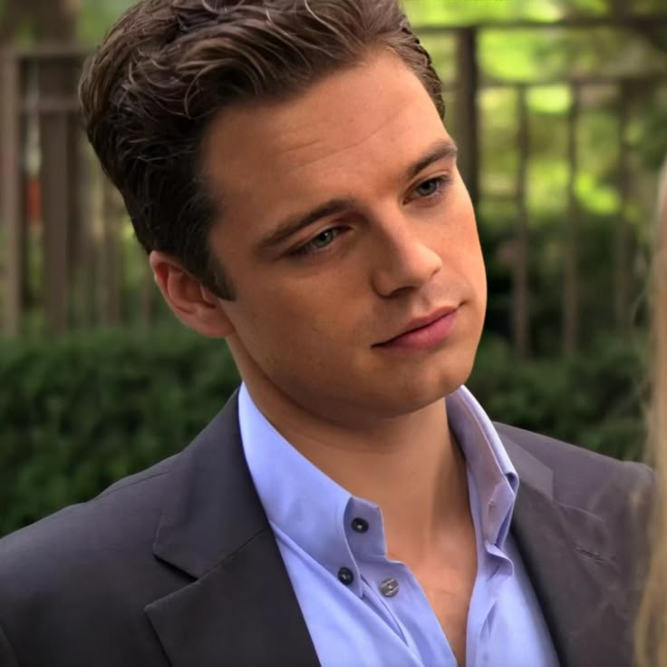

Blair Waldorf
Leighton Meester
La reina del Upper East Side. Inteligente, ambiciosa y perfeccionista, maneja el poder social con estrategia, aunque su búsqueda de control suele chocar con sus emociones.

Serena Van Der Woodsen
Blake Lively
Serena la It girl del Upper East Side. Carismática, impulsiva y siempre en el centro del drama, aunque intenta dejar atrás su pasado.

Nate Archibald
Chace Crawford
Nate es es uno de los pocos que intenta mantenerse al margen del drama. Es leal y honesto, suele debatirse entre lo que espera su familia y lo que realmente quiere para su vida.

Chuck Bass
Ed Westwick
Chuck es el joven más poderoso de la cuidad. Es adinerado, oscuro y manipulador. Evoluciona de villano a personaje complejo marcado por el poder y las relaciones intensas.

Dan Humphrey
Penn Badgley
Dan es el outsider de Brooklyn. Intelectual y observador, entra al mundo de la élite mientras mantiene una mirada crítica sobre él.

Georgina Sparks
Michelle Trachtenberg
Georgina es el caos hecho persona. Manipuladora y provocadora, irrumpe en la élite para desestabilizarla y exponer sus secretos.

Lily Van Der Woodsen
Kelly Rutherford
Lily es la madre de Serena y Eric, es elegante y sofisticada, representa la alta sociedad neoyorquina con un pasado lleno de secretos.

Rufus Humphrey
Matthew Settle
Rufus es el padre de Dan y Jenny. Bohemio y moral, intenta sostener valores reales frente a la superficialidad del entorno.

Eric Van Der Woodsen
Connor Paolo
Eric es el hijo de Lily y hermano menor de Serena. Sensible y vulnerable, intenta encontrar su lugar dentro de una élite dominada por las apariencias, mientras enfrenta las presiones familiares y sociales del Upper East Side

Vanessa Abrams
Jessica Szohr
Vanessa es amiga de Dan y outsider del sistema. Crítica e independiente, cuestiona el privilegio aunque termina involucrada.

Jenny Humphrey
Taylor Momsen
Jenny es la hija de Rufus y hermana de Dan. Ambiciosa y creativa, busca pertenecer a la élite aunque eso la haga perderse.

Eleonor Waldorf
Margaret Colin
Eleanor es la madre de Blair. Elegante y exigente, dirige el mundo de la moda mientras mantiene una relación compleja con su hija.

Dorota Kishlovsky
Zuzanna Szadkowski
Dorota trabaja en la casa de Blair y su figura materna. Leal y discreta, protege los secretos de la élite.

Bart Bass
Robert John Burke
Bart es el padre de Chuck. Frío y autoritario, prioriza el poder y los negocios por encima de los vínculos personales.

William Van Der Woodsen
William Baldwin
William es el padre de Serena y Eric. Manipulador y ambicioso, regresa a sus vidas generando conflictos y secretos familiares.

Jack Bass
Desmond Harrington
Jack es el tío de Chuck y hermano de Bart Bass. Carismático y oportunista, se mueve por interés propio.

CeCe Rhodes
Caroline Lagerfelt
CeCe es la abuela de Serena y Eric, madre de Lily. Es sofisticada y tradicional, representa el poder y las reglas de la alta sociedad.

Cyrus Rose
Wallace Shawn
Cyrus es el padrastro de Blair. Cariñoso y optimista, aporta calidez y equilibrio en medio de las tensiones familiares.

Ivy Dickens
Kaylee DeFer
Ivy es una joven impostora que se infiltra en la familia van der Woodsen. Astuta y oportunista, termina envuelta en los dramas del Upper East Side.

Louis Grimaldi
Hugo Becker
Louis es un príncipe de Mónaco que inicia una relación romántica con Blair. Es elegante y correcto, las exigencias de la realeza terminan generando conflictos y desconfianza
Harold Waldorf
.
Harold es el padre de Blair. Sensible y refinado, mantiene una relación cercana con su hija a pesar de la distancia, ya que tras el divorcio el se muda a Francia.

Diana Payne
Elizabeth Hurley
Diana es una empresaria influyente vinculada al mundo de los medios. Seductora y estratégica, utiliza la información y el poder para manipular a quienes la rodean.

Penelope Shafai
Amanda Setton
Penelope es una de las amigas de Blair en Constance Billard. Superficial y competitiva, suele participar en los rumores y conflictos del grupo.

Howard Archibald
Sam Robards
Howard, mejor conocido como El Capital, es el padre de Nate. Estricto y ambicioso, presiona constantemente a su hijo para mantener el prestigio y la imagen de la familia Archibald.

Damien Dalgaard
Kevin Zegers
Damien es un estudiante problemático vinculado a Jenny y Serena. Es rebelde y manipulador, suele estar involucrado en situaciones peligrosas.

Carter Baizen
Sebastian Stan
Carter es un joven rebelde de la alta sociedad y antiguo amigo de Nate. Misterioso y aventurero, suele aparecer involucrado en relaciones conflictivas y secretos del Upper East Side.

Carol Rhodes
Sheila Kelly
Carol es la hermana de Lily y madre de Lola. Es independiente y reservada, mantiene una relación conflictiva con su madre y con la familia van der Woodsen por secretos del pasado.

Charlie Rhodes
Ella Rae Peck
Charlie, mejor conocida como Lola, es la hija de Carol y prima de Serena. Sencilla y alejada de la élite, aunque al principo intenta no, termina involucrándose en el mundo social y mediático del Upper East Side

William Van der Bilt
James Naughton
William es el abuelo de Nate y un influyente capitán de la alta sociedad neoyorquina. Tradicional y poderoso, representa las expectativas y la presión sobre la familia Archibald.

Juliet Sharp
Katie Cassidy
Juliet es una estudiante universitaria que busca vengarse de Serena. Inteligente y manipuladora, provoca conflictos y engaños dentro del grupo.